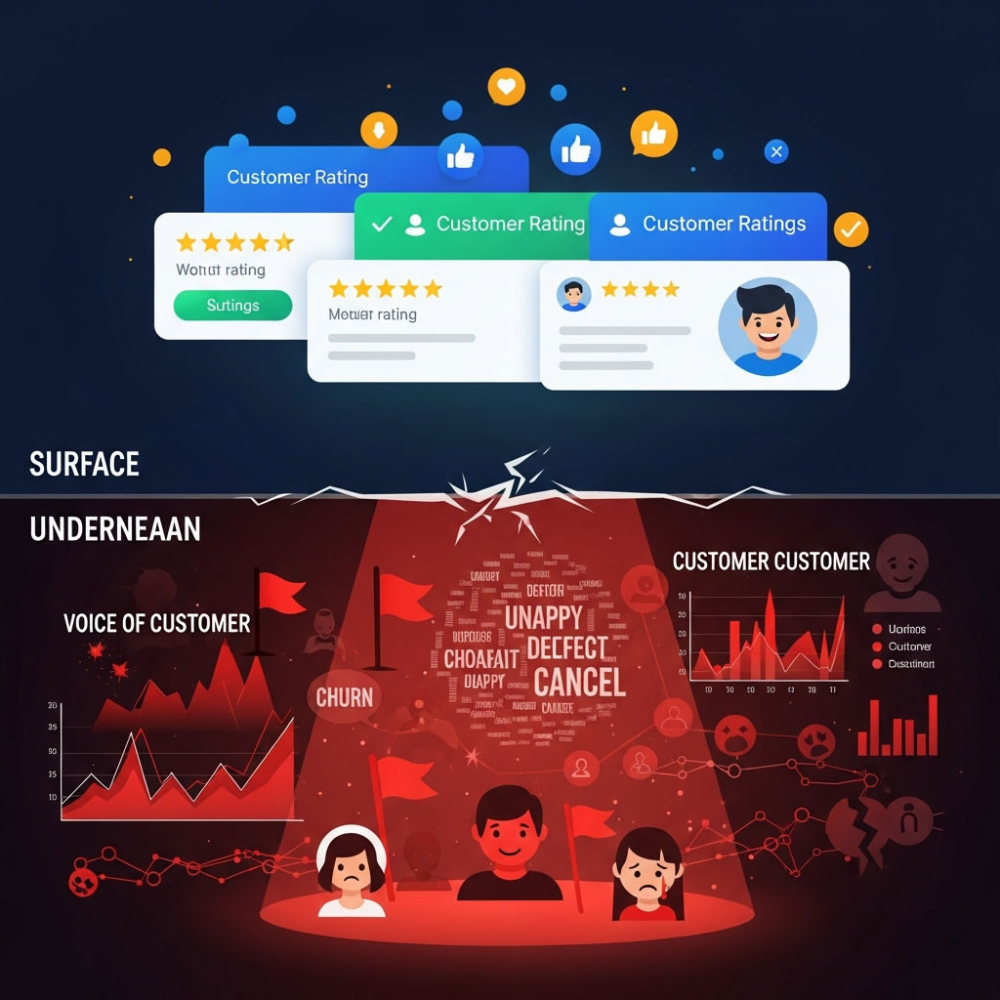

A 4-star rating looks good on a slide. But it rarely explains why customers feel the way they do. Voice of Customer analytics goes deeper — into language, emotion, and intent.
The problem with star ratings
Ratings flatten complex feedback into a single number. Two customers can leave the same rating for completely different reasons.
What modern VoC actually captures
- Emotion hidden inside text
- Recurring complaints across channels
- Early signals of dissatisfaction
- Context behind “neutral” feedback
Listening isn’t about volume. It’s about understanding meaning.
How DASTATS uses VoC
We combine NLP, sentiment, and topic modeling to help teams act on feedback — not just read it. VoC becomes an input to product, CX, and marketing decisions.